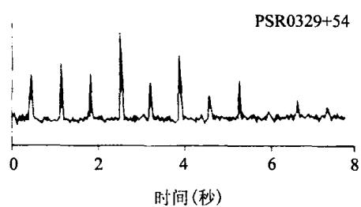
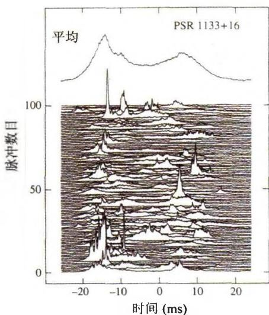
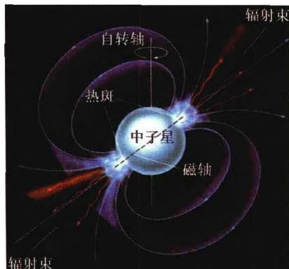
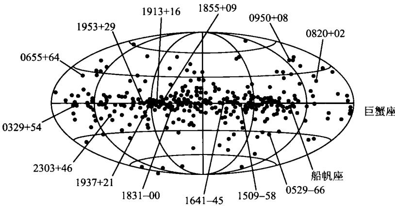
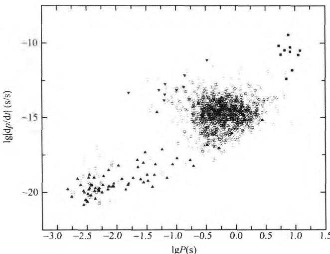

1967年夏天，英国剑桥射电天文学家休伊什(A. Hewish)和他的研究生乔丝琳·贝尔(J. Bell)发现了射电脉冲星。当时，休伊什和贝尔制造了一个很大的长波接收天线阵，它由2048个偶极天线组成，占地面积2公顷，构成了一架对微弱射电源很灵敏的射电望远镜，且对很大的天区能进行长时间的监视。它当初的设计用途是搜索宇宙射电源的闪烁。这种闪烁类似于恒星的闪烁，但它不是起源于地球大气，而是起源于行星际空间的带电粒子。1967年7月，仪器开始在波长3.7m，频率81.5MHz处工作，数据处理工作主要由贝尔进行。从7月开始常规纪录后的一个月内，贝尔就有了发现。她从每天长达30m的纪录纸带中，发现有某种信号起伏，信号的特征不像是闪烁，而更像是某种规则的脉冲。又经过几个月的连续工作，到11月28日，贝尔最终确认一个周期为1.337秒的脉冲信号的存在。随后，休伊什和贝尔又进行了一系列的排除性实验，最后断定该信号的来源不是地球上或附近空间的，一定在太阳系之外。同时，脉冲本身的宽度约为20 ms，这说明信号发射源不比地球大。接着，他们用一台时间响应更快的接收机，在其他天空位置又发现了4个类似的射电脉冲信号源。最初他们曾猜想这种信号来自地外文明，因为当时英国正在流行一本科幻小说，其中描绘了外星人——小绿人（LGM，即Little Green Men）。但是，在接收到的信号中没有发现任何可辨认的编码。而且，在脉冲频率中没有出现任何多普勒效应，因此不可能发自某颗恒星的行星。经过

图 4.3a 脉冲星 PSR0329 + 54 的脉冲信号
图 4.3b 脉冲星 PSR1133 + 16 的 500 个脉冲的平均结果(图上方)以及连续的 100 个脉冲图(图下方)认真慎重的思考，他们最后认定这不是外星人发来的联络信号，而是来自一种遥远的天体——脉冲星（Pulsar）。在发表于1968年2月24日英国《自然》杂志上的一篇文章中，他们报道了最早发现的脉冲星（即PSR1919+21）的观测结果，并指出，这可能就是30多年来一直只是一种理论模型的中子星。
发现中子星的消息一经传开就立即引起轰动。离休伊什等的文章发表只有两个星期，《自然》杂志就发表了英国焦德雷尔班克天文台(它拥有76米口径射电望远镜)关于这第一颗脉冲星的一些重要观测细节。在此后的几个月中，全世界至少有8个天文台报道了新的脉冲星的发现。至1968年底，共发现脉冲星23颗(参见图4.3)，其中包括在蟹状星云和船帆座超新星遗迹中发现的脉冲星，两者的脉冲周期分别为33毫秒和88ms。对脉冲星的命名也统一为PSR(Pulsating Source of Radio的缩写)后面加上该星的赤经和赤纬数据，如第一颗脉冲星PSR1919+21的位置就是赤经19度19分，赤纬+21度。与此同时，理论天体物理学家也在进行深入思考。1968年帕齐尼(F. Pacini)和戈尔
德(T. Gold)分别指出，脉冲星就是快速旋转的中子星。他们认为，中子星有强磁场，因此在磁场中运动的电子和质子就发出同步加速辐射或曲率辐射，形成一个与中子星一起转动的射电波束(图4.4)。当这一射电波束扫过地球时，我们就可以
观测到一个脉冲信号，这称为灯塔效应。这一看似简单的解释至今仍然是脉冲星的标准理论模型，尽管其中还有不少细节到现在还没有完全搞清楚。
我们来估算一下,为什么脉冲星只能是中子星,而不会是白矮星。设脉冲星的质量为 M, 半径为 R, 且密度 \rho 均匀分布。现在让这样一个星体以周期 P 或角速度 \omega 旋转。为使星体不致瓦解, 一个必要的条件是, 赤道边缘处单位质量星体物质受到的惯性离心力必须小于引力, 即

图4.4 脉冲星的辐射机制\omega^ {2} R = \left(\frac {2 \pi}{P}\right) ^ {2} R \leqslant \frac {G M}{R ^ {2}} \approx \frac {4 \pi}{3} G \rho R\tag{4.28}
这一条件给出
P ^ {2} \geqslant \frac {3 \pi}{G \rho}\tag{4.29}
可见如果星体是白矮星，即 \rho \sim 10^{6} \mathrm{~g/cm}^{3} ，则有 P \geqslant 10 \mathrm{~s} ，这与观测到的几十毫秒的脉冲周期相比显然太大了。要使转动周期 P < 1 \mathrm{~s} ，则密度至少要 \rho > 10^{8} \mathrm{~g/cm}^{3} ，这已超过白矮星的密度范围，所以脉冲星只能是中子星。当然，还可以从恒星脉动的角度来分析，即认为脉冲星是某种星体有规则的膨胀收缩即径向脉动，而发出周期性的辐射。但恒星脉动理论给出的周期与密度的关系为 P \sim (G\rho)^{-1/2} ，这与(4.29)十分相似。因此结论应当是一样的：脉冲星只能是中子星。至于为什么最后采用的是旋转中子星模型而不是脉动中子星模型，主要是根据观测到的脉冲星的辐射特征以及周期的变化特征，稍后我们会对此加以分析。
第一颗脉冲星 PSR1919 + 21 是在射电波段发现的，但从 20 世纪 70 年代以来，随着多颗空间卫星（例如爱因斯坦卫星、EXOSAT 卫星、COS-B 卫星和 CGRO 卫星）的升空，已把这种观测推广到红外，光学、X 射线甚至 γ 射线波段。到目前为止，已发现的银河系内脉冲星总数有 1700 多颗，且绝大多数集中在银道面附近（图 4.5），球状星团中的脉冲星只有几十颗。银河系外的脉冲星是人们长期以来孜孜不倦搜索的目标，但至今只在大、小麦哲伦云中有发现，共计 20 颗。无论是银河内还是银河外，观测到的脉冲星总数比估计存在的数目要少许多。例如有人估计，银河系内的脉冲星总数应当在20万颗以上。这可能是由于灯塔效应，当脉冲波束不对着我们的时候，就无法发现它们。许多脉冲星不仅在射电波段发射脉冲，而且在其他波段也发射。例如著名的蟹状星云脉冲星PSR0531+21，就是一颗在射电、光学、X射线和γ射线都有显著脉冲辐射的脉冲星。

图 4.5 脉冲星在银道坐标系内的空间分布。它们主 要集中在银道面附近,说明它们是银河系内的天体正是由于脉冲星(中子星)对天文学和物理学研究的重大意义,脉冲星的发现被列为20世纪60年代天文学的四大发现之一,而休伊什也因此获得了1974年的诺贝尔物理学奖。
脉冲星的主要观测特征可以大致归纳如下：
● 脉冲周期短，而且相当稳定。例如第一颗 PSR1919 + 21 的周期为 P = 1.3373011922s，蟹状星云脉冲星（PSR0531 + 21）为 P = 0.03309756505419s。现在的周期测量可以达到 10 多位有效数字，因而脉冲星就像走时极其精确的时钟。脉冲星周期大多在 0.25 到 2s 之间，平均值大约是 0.8s。迄今为止观测到的周期最长的是 PSR1841 - 0456(P = 11.8s)，周期最短的是 PSR J1748 - 2446(P = 0.00139s)。
● 脉冲窄,多数脉冲星的脉冲宽度/周期~1/30。脉冲轮廓各有特点,大约一半的脉冲星具有单峰轮廓,其余为双峰或多峰结构,但所有的脉冲轮廓都是十分稳
定的。
● 脉冲星的脉冲周期总是缓慢地在增加(除了偶然的周期突变外), 即
\dot {P} = \mathrm{d} P / \mathrm{d} t > 0\tag{4.30}
例如蟹状星云脉冲星 \dot{P} \simeq 3.6526 \times 10^{-8} 秒/天。脉冲星的年龄上限可以用特征年龄 T \approx P / \dot{P} 来估计，对蟹状星云脉冲星，这样算出来的值是 T \approx 2480 年。实际上蟹状星云超新星是公元 1054 年爆发的，故这一年龄估计值有些偏大。一般脉冲星典型的周期变化率是 \dot{P} \sim 10^{-10} 秒/天，或 \dot{P} \sim 10^{-15} ，相应的特征年龄 T 大约是几千万年。且周期短的 \dot{P} 大，故相应的 T 小，说明周期短的脉冲星年轻。随着时间推移，P 变大， \dot{P} 变小，T 也必然越来越大。
- 射电辐射能谱为非热辐射谱——幂律谱，即 E = E_0\nu^a ，其中 \nu 为辐射频率，幂指数 \alpha 的典型值为 \alpha \sim -1.5 ，一般的范围是 \alpha 在 -1\sim -3 之间。这种幂律谱是高能电子同步-曲率辐射的典型特征。同时，观测到的辐射也是高度偏振的。
最后一个特征即辐射的幂律谱，是图4.4所示的具有强磁场的转动中子星辐射的必然结果。此时快速旋转的强磁场能加速荷电粒子（主要是电子），使其获得很大能量，电子绕磁力线盘旋或沿磁力线运动，就产生具有幂律谱的同步-曲率辐射。由于两个磁极处的磁场强度最强，因此辐射集中于磁轴方向并形成两个方向相反的波束；又由于磁轴与自转轴一般并不重合（就像地球的磁轴与自转轴不重合一样），沿磁轴方向发出的辐射波束就会产生灯塔效应，即波束扫过时观测者就会看到一个辐射脉冲。脉冲星的这个模型也称为转动的磁偶极子模型。相比之下，脉动模型不能给出辐射幂律谱的自然解释，因而就被排除在合理的模型之外。
我们来半定量地分析一下图 4.4 所示的转动磁偶极子模型。根据电动力学，一个转动的磁偶极子的辐射功率是（为简单起见设磁轴与自转轴垂直，否则要乘一个与方向有关的因子）
\dot {E} = \frac {\mathrm{d} E}{\mathrm{d} t} \simeq - \frac {2 \mathbf {m} ^ {2} \omega^ {4}}{3 c ^ {3}}\tag{4.31}
其中 m 为磁偶极矩， m \approx BR^{3} （R 为中子星半径，B 为其表面磁场强度）， \omega 为自转角速度，负号表示总能量随时间在减少。因为中子星没有其他的能源，电磁辐射的能量只能由星体的转动能来提供，故
\dot {E} = \frac {\mathrm{d}}{\mathrm{d} t} \left(\frac {1}{2} I \omega^ {2}\right) = I \omega \dot {\omega}\tag{4.32}
这里 I 为中子星的转动惯量。(4.31)与(4.32)相等,得到
\dot {\omega} = \frac {\dot {E}}{I \omega} = - \frac {2 \mathbf {m} ^ {2} \omega^ {3}}{3 I c ^ {3}} \approx - \frac {2 B ^ {2} R ^ {6} \omega^ {3}}{3 I c ^ {3}}\tag{4.33}
这里负号表示角速度在减小，即中子星越转越慢，亦即脉冲周期逐渐变长。由此式以及 \omega = 2\pi / P ，容易得出
P \dot {P} = - \frac {4 \pi^ {2} \dot {\omega}}{\omega^ {3}} \approx \frac {8 \pi^ {2} B ^ {2} R ^ {6}}{3 I c ^ {3}}\tag{4.34}
取中子星质量为 M \simeq 1.4M_{\odot}, R \simeq 10 \, km ，可以计算出转动惯量 I = 2MR^{2}/5 ；再由观测给出的 P， \dot{P} 值，就可以估计出一般中子星的表面磁场强度 B，它的值是 B \sim 10^{12} \sim 10^{13} 高斯。前面已经说过，在坍缩成中子星的过程中，可以认为磁通量守恒，因而形成如此强的磁场是可能的。
由以上数据还可以做两个数值估计。一个是脉冲星的辐射功率。根据(4.32)以及蟹状星云脉冲星的有关观测数据，可以估算出
\dot {E} = I \omega \dot {\omega} \approx 4 \pi^ {2} I \frac {\dot {P}}{P ^ {3}} = \frac {8 \pi^ {2} M R ^ {2} \dot {P}}{5 P ^ {3}} \approx 5 \times 1 0 ^ {3 8} \mathrm{erg/s}\tag{4.35}
观测到的脉冲星辐射功率也是 10^{38} erg/s 量级，与理论估计结果是一致的。
再来看脉冲星的年龄估计。如果磁场的衰减不显著，则(4.34)等号右边可以近似看成是常量，积分(4.34)得到
\frac {1}{2} \left(P ^ {2} - P _ {0} ^ {2}\right) = \frac {8 \pi^ {2} B ^ {2} R ^ {6}}{3 I c ^ {3}} \left(t - t _ {0}\right)\tag{4.36}
式中 P_{0} 为脉冲星诞生时的脉冲周期， t_{0} 为脉冲星诞生的时刻，故 t - t_{0} \equiv \tau 为脉冲星的年龄。因为一般脉冲星的周期在逐渐变长，可以设经过相当长的时间后有 P \gg P_{0} ；再利用(4.34)，把(4.36)等号右边的因子置换成观测量 P\dot{P} ，(4.36)化为
\frac {1}{2} P ^ {2} \simeq P \dot {P} \tau \Rightarrow \tau \simeq \frac {1}{2} \frac {P}{\dot {P}}\tag{4.37}
显然这一年龄估计比前面提到的特征年龄 T \approx P / \dot{P} 要小一半。对于蟹状星云脉冲星， \tau \approx 1240 年，这与实际年龄（～950年）非常接近。以上两个估计再次表明，转动磁偶极子模型可以得到与观测相符的结果，而脉动模型在这些方面却无能为力。附带指出，(4.34)等号右边近似看成常量的结果，也使得等号左边 P \dot{P} 可以近似看成是常量，这意味着 P 变大时 \dot{P} 变小。
星际介质通常可以看作是稀薄的等离子体，因而当脉冲星发出的电磁辐射经过星际介质转播时，就会发生色散，也就是不同频率电磁信号的传播速度不同。因此，一个宽频脉冲信号发出后，高频和低频分量到达地球的时间就会有差异，由此时间差就可以计算出脉冲星的距离。下面我们对此做一简要介绍。
假设等离子体足够稀薄并且星际磁场很弱,这时频率为 \nu 的电磁波传播的速度是
v _ {\nu} = c \left(1 - \frac {e ^ {2} n _ {\mathrm{e}}}{\pi m _ {\mathrm{e}} \nu^ {2}}\right) ^ {1 / 2} = c \left(1 - \frac {\nu_ {\mathrm{p}} ^ {2}}{\nu^ {2}}\right) ^ {1 / 2}\tag{4.38}
其中 n_{e} 为电子的平均数密度， \nu_{p} \equiv e^{2} n_{e} / \pi m_{e} 称为等离子体频率。由(4.38)可以看到， \nu 越低，传播速度越小。如果脉冲星到地球的距离是 L，则频率为 \nu 的电磁波传播的时间是 t_{\nu} = L / v_{\nu} 。在稀薄的等离子体中， \nu_{p} \ll \nu ，因此有
t _ {\nu} \simeq \frac {L}{c} \left(1 + \frac {1}{2} \frac {\nu_ {\mathrm{p}} ^ {2}}{\nu^ {2}}\right) = \frac {L}{c} \left(1 + \frac {e ^ {2} n _ {\mathrm{e}}}{2 \pi m _ {\mathrm{e}} \nu^ {2}}\right)\tag{4.39}
如果用两个频率来观测,一个是高频 \nu_{H} ,一个是低频 \nu_{L} ,则同一个脉冲信号到达观测者的时间差为
\Delta t \simeq \frac {L}{c} \frac {e ^ {2} n _ {\mathrm{e}}}{2 \pi m _ {\mathrm{e}}} \left(\frac {1}{\nu_ {\mathrm{L}} ^ {2}} - \frac {1}{\nu_ {\mathrm{H}} ^ {2}}\right)\tag{4.40}
这样，如果 n_{e} 能用其他方法得出（通常利用辐射的光深测量），则由观测到的 \Delta t 就可以算出脉冲星的距离。观测表明，除了极个别的情况外，所有已知的脉冲星的距离都在 10 kpc 以内，因此它们都是银河系内的天体。
附带谈到，利用脉冲星辐射偏振的特性，还可以测量星际磁场的强度。脉冲星的辐射呈现很强的线偏振，这正是同步加速辐射或曲率辐射的一个重要特征。在辐射到达观测者之前，要通过很长距离的带有弱磁场的星际介质，这就会使偏振面发生法拉第旋转。偏振面的旋转角是
\Delta \varphi \simeq 0. 8 1 \lambda^ {2} n _ {\mathrm{e}} L B _ {/ /}\tag{4.41}
式中 \lambda 为波长（单位是 \mathbf{m} ）， B_{\parallel} 表示星际磁场平行于视线方向的分量，以微高斯为单位； n_{\mathrm{e}} 的单位是 \mathrm{cm}^{-3} ，脉冲星距离 L 的单位是秒差距， \Delta \varphi 的单位是弧度。 n_{\mathrm{c}} 和 L 的测定上面已进行了讨论，因而为已知。只要选择不同波长的 \Delta \varphi 的观测结果进行对比，就可以得出 B_{\parallel} 。用这种方法已经测量了一批脉冲星，几乎在所有情况下，得到的 B_{\parallel} 的结果都是大约为几个微高斯。这一方法是迄今为止测量星际磁场强度的最好办法，因而，脉冲星的发现为我们提供了研究星际介质的一个重要手段。
虽然脉冲星(中子星)的研究已经取得了许多引人注目的成果,但仍然还有一
些重要问题没有完全解决,例如:
- 脉冲星磁层的物理性质以及电子如何被加速。古德里奇(P. Goldreich)和朱利安(W. Julian)1969年就首先提出，中子星表面很强的磁场，在快速转动时会产生感应电场。该电场垂直于星体表面的分量，将力图把表面以内的电子和离子拉出来，从而使表面附近积聚大量的带电粒子，形成一个磁层。例如，计算表明，蟹状星云脉冲星表面磁层内的电子密度可能高达 10^{13} / \mathrm{cm}^3 。这些带电粒子可以沿磁力线运动，并与磁场一起绕中子星的自转轴旋转。电场沿磁力线的分量，可以把带电粒子加速到极端相对论的速度，使其具有很高的能量从而发出辐射。这就是通常的磁层标准模型。但仔细的研究表明，当磁层中的电荷密度达到一定值时，沿磁力线向外的电场分量可能被完全屏蔽，因而带电粒子就不能被加速。为避免这一情况，已经提出了不少看法，例如假设磁层中有整体的电荷流动，考虑粒子的惯性，考虑磁力线的弯曲以及广义相对论效应等。具体的模型目前有极冠模型、外间隙模型和狭长间隙模型等。例如极冠模型认为，极冠附近可以产生加速电场，初级电子在极冠区被加速到 10^{13}\mathrm{eV} ，它由曲率辐射而发出高能光子；该光子被磁场吸收并转换为正负电子对，产生的次级电子通过同步辐射损失能量，脉冲星的高能（γ射线）辐射主要来自这一过程。同步辐射光子导致进一步的正负电子对的级联过程，再下一级的同步辐射就主要发生在光学和射电波段。外间隙模型认为，磁层中存在一个零电荷面，把正负电荷分离开，且在它的两边电荷的空间分布是不连续的，有一个真空间隙，称为外间隙。外间隙中间存在很强的加速电场，正负电子将沿相反方向被加速到极高的能量，并通过曲率辐射或逆康普顿辐射达到能量平衡。同时，由这些初级电子产生的初级光子有一部分在间隙内转化为正负电子对，直到产生足够的净电荷使间隙消失。这些二级正负电子对又被加速，发出的高能光子又转化为三级正负电子对，它们产生低能辐射，主要集中于光学和红外波段。狭长间隙模型认为，在极冠边缘附近可能存在狭长的加速间隙，电子可以从磁极附近发射出来并被加速，然后通过曲率辐射和逆康普顿辐射产生高能光子。高能光子被强磁场吸收并转化为正负电子对。一些正电子向下偏转回到中子星表面，电子则向上加速，并达到相当于几个星体半径处的很高的高度，再发出高能辐射。这些模型各自都有成功之处，但也都存在与观测结果不完全相符的问题。目前还没有一个模型可以同时解释观测到的脉冲星各个波段的辐射特征。看来，要彻底搞清楚脉冲星的磁层结构以及电子的加速机制，还需要继续努力探索。
● 毫秒脉冲星、强磁星(Magnetar)以及脉冲周期的突变。如果把所有脉冲星的周期变化率 \dot{P} 标为纵坐标，把脉冲周期 P 标为横坐标，则得到一个 \dot{P} 相对 P 的分布, 结果如图 4.6 所示。从图中看出, 脉冲星在图上的分布大体集中在三个区域: 绝大多数脉冲星位于中间的区域, 即脉冲周期在 1 秒附近; 有少数不规则 X 射线脉冲星 (AXP) 或软 γ 射线脉冲星 (SGR) 的脉冲周期较长, 且 \dot{P} 也较大, 它们分布在图的右上方; 还有相当部分的脉冲星位于图的左下方, 它们的周期很短, 称为毫秒脉冲星。

图 4.6 脉冲星的周期变化率 \dot{P} 相对周期 P 的分布。 图中三角形表示的数据点为已经确认的密近双星先谈一下毫秒脉冲星。1982年发现了一颗高速旋转的脉冲星PSR1937+21，它每秒自转660次，脉冲周期只有1.5毫秒，这在当时十分令人惊异。至今已经发现了一批这样的毫秒脉冲星，它们的脉冲周期比通常的脉冲星要小两个数量级，且表面磁场强度也比通常小两个数量级。如前所述，脉冲周期短说明它刚诞生不久，但磁场强度很弱却意味着它的年龄很大（磁能逐渐消耗掉），这两者构成尖锐的矛盾。目前普遍的看法是，毫秒脉冲星是密近双星的一员，它有一个伴星，来自伴星的物质携带角动量落到该脉冲星上，使已经演化到晚期的脉冲星自转大大加速，形成毫秒脉冲星，但该脉冲星物理上已经演化到晚期，故磁场很弱。已经发现了一些毫秒脉冲星具有伴星的例子（如图4.6中三角形所示），但一直没有找到PSR1937+21的伴星。有人猜测，PSR1937+21的伴星是一颗白矮星，在两颗星逐渐接近的过程中，白矮星被潮汐力扯碎了，中子星也受到猛烈碰撞，故其自转速度大大加快。
与毫秒脉冲星相反，强磁星（Magnetar）被认为是具有极强磁场的中子星，其表面磁场强度比通常的脉冲星要高出几个数量级，但其自转速度较慢，一般为5～8秒。它们发出硬X射线和软γ射线的脉冲辐射，能量可达100 keV。有一个强磁星是在大麦哲伦云中发现的，其余的都位于银河系内。目前倾向于认为，强磁星是超新星爆发后不久形成的，即年轻的脉冲星，但它们的辐射机制与通常的脉冲星有所不同。它们不是由于磁场的转动而辐射，而是由于强磁场的应力，使得中子星表面开裂，从而产生所谓“超爱丁顿”辐射。这种辐射强度可以达到普通情况下爱丁顿光度极限的 10^{3}\sim10^{4} 倍。显然，为了得到如此大的光度，磁场强度也需要极强。
最后来谈脉冲周期的突变。有少数脉冲星存在特殊的周期突变现象，即脉冲周期在几天的时间里突然变短，也就是星体的自转速度突然加快。例如船帆座脉冲星PSR0833-45，它在1969年2月24日到3月3日期间，脉冲周期减小了500万分之一秒，然后又恢复到以前周期逐渐变长的正常状态。此后，类似的情况又在1971年和1976年发生了两次。其他几个脉冲星也有过周期突然变短的现象，例如蟹状星云脉冲星。对这种自转突然变快的原因，一般认为是所谓星震引起的，即类似于地球上的地震，使得星体结构（从而转动惯量）发生突然变化（减小），导致转动角速度变化（加大）。我们来估计一下，星震使船帆座脉冲星的半径可能发生多大变化。为简单起见假设脉冲星为密度均匀的球体。在自转角动量 (J = 2MR^2\omega /5) 不变的情况下，半径 R 和转动角速度 \omega 及转动周期 P 之间满足
\frac {\Delta R}{R} = - \frac {1}{2} \frac {\Delta \omega}{\omega} = \frac {1}{2} \frac {\Delta P}{P}\tag{4.42}
代入船帆座脉冲星的有关数据 P = 0.088\mathrm{s},\Delta P = -2\times 10^{-7}\mathrm{s} ，设半径为 R = 10 \mathrm{km} ，因而得到 \Delta R\simeq -1.1\mathrm{cm} 。这虽然只是一个很小的量，但产生的星震会十分剧烈，估计可以达到里氏25级，而地球上最强烈的地震也只有8.9级。但另一方面，船帆座脉冲星在数年内接连经历了几次周期突然变短，这在理论上却很难解释，因而使得一部分人对星震模型的合理性产生了疑问。有人提出中子星核心处可能有湍流运动，也有人提出核心处可能发生相变，从而迫使外壳进行某种结构调整，等等。总之，除了上面谈到的表面磁层结构问题，看来我们对中子星内部结构的了解也还是非常不够的。这也包括上面对强磁星的解释。
- 关于脉冲星与超新星遗迹的关联。自从巴德和兹威基提出中子星是超新星爆发的产物以来，人们一直把脉冲星与超新星联系在一起。我们已经看到，蟹状星云脉冲星和船帆座脉冲星的确伴随有超新星遗迹。但是，在大多数超新星遗迹中却找不到脉冲星。根据1991年的一个统计资料，在当时已知的450颗脉冲星和
200个超新星遗迹中，只有3对有演化上的关联。到现在虽然又发现了不少新的脉冲星和超新星遗迹，但它们相互关联(成协)的事例仍然比率极低。这就不能不引起人们的疑问：脉冲星的确是超新星爆炸后的产物吗？为什么观测到的它们之间成协的事例如此之少？
我们在前面讨论超新星遗迹时曾谈到，向超新星遗迹不断注入高能电子的源头，就是与超新星遗迹一起诞生的脉冲星。因此，要解释超新星遗迹能长时间维持高能辐射，必然需要脉冲星存在。但正如前所述，脉冲星的辐射是在一个极窄的立体角锥内发出的，因而这一光束扫过地球的几率非常低，如果光束扫不到地球，当然就不会观测到脉冲星。这可能就是观测到的脉冲星与超新星遗迹成协事例很少的主要原因之一。另一个可能的原因是，超新星爆炸过程中，强大的爆炸力使中子星获得很高的反冲速度。经过一个较长的时间后，它与超新星遗迹之间的距离足够大，不能再向后者提供足够多的高能电子，因而超新星遗迹就逐渐暗淡下去，并最终从我们的视野中消失。再一个可能是，观测表明，超新星遗迹自身的扩散速度与速度弥散都很大，这样其寿命就会大大短于脉冲星。脉冲星的平均寿命估计是300万年，最老的可能超过10亿年。而超新星遗迹可能在几万年到数十万年的时间内就彻底消散，所以我们看到的脉冲星总数比超新星遗迹要多出很多。